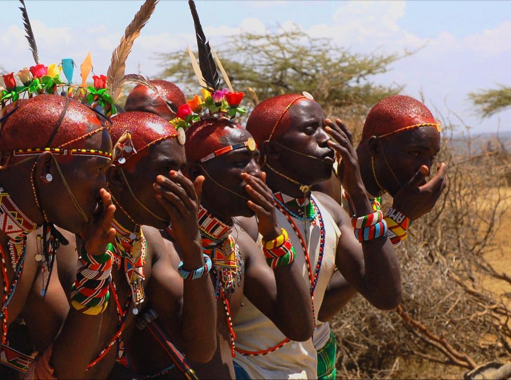
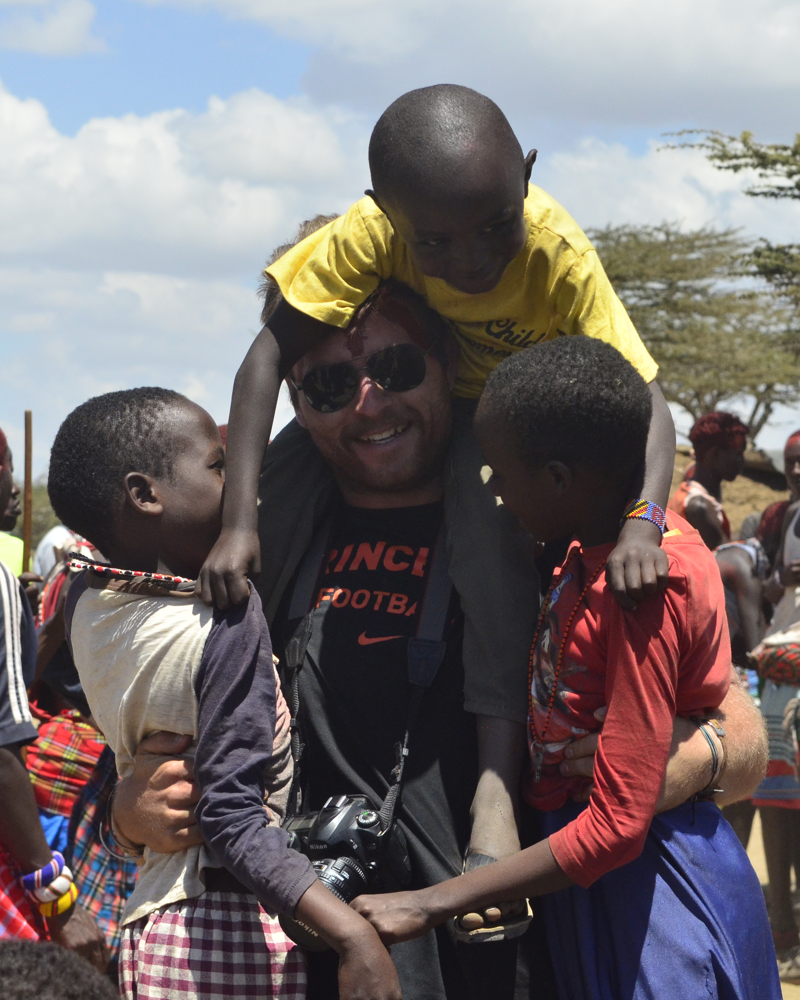
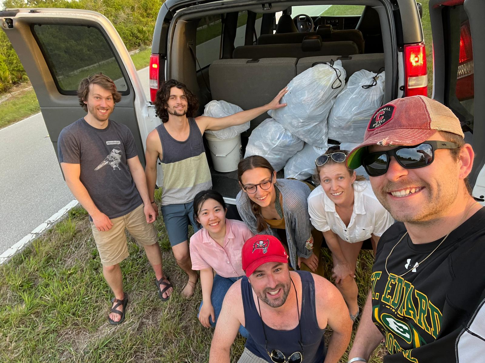

In the Field & Community






I believe that science is most impactful when paired with service. From student governance and peer review to science communication and mentoring, I aim to build the communities that sustain our work.
Ad-hoc reviewer for: Plant Biology, Environmental Microbiology, Pedosphere, Global Change Biology (assisting X. Xu)
Writing and Data Consultant at HighEdit Consulting (2022–present) — independent consulting practice assisting international clients to improve research manuscripts for publication in English-language journals.
Ad-hoc grant reviewer, Cornell College of Arts and Life Sciences (2020–2025).


